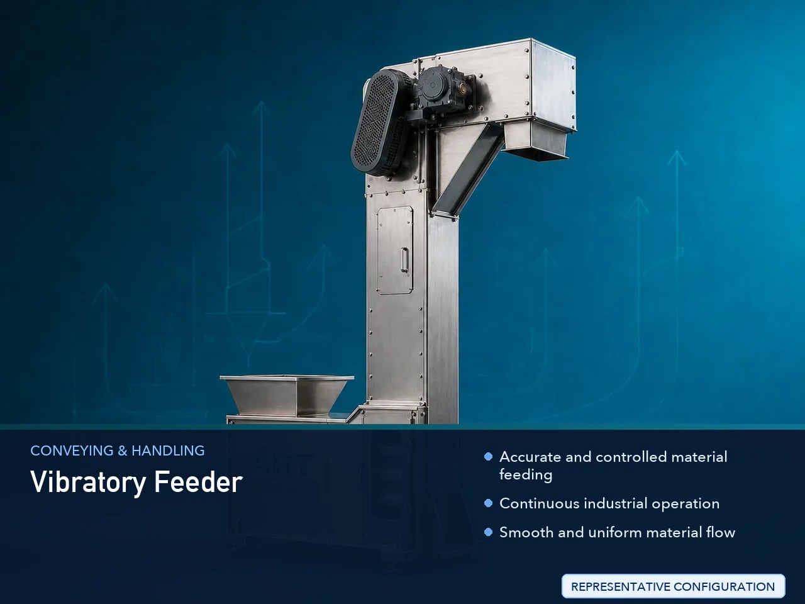

Vibratory Feeder Machine (Industrial Vibrating Material Feeding & Handling System)
A Vibratory Feeder Machine, also known as a Vibrating Feeder, Vibro Feeder, or Industrial Vibratory Feeding System, is a precision material handling equipment designed for controlled feeding, dosing, conveying, sorting, alignment, and transfer of powders, granules, flakes, pellets, grains,…

About the Vibratory Feeder
Vibratory feeder systems are widely used for: ✔ Controlled material feeding ✔ Automatic dosing operations ✔ Bulk material handling ✔ Conveyor feeding systems ✔ Packaging line feeding ✔ Industrial automation applications
The machine improves: ✔ Feeding accuracy ✔ Production efficiency ✔ Material flow consistency ✔ Process automation ✔ Labor reduction ✔ Production line synchronization
Industrial vibratory feeders use: ✔ Electromagnetic vibration systems ✔ Motorized vibrating mechanisms ✔ Controlled vibration frequency ✔ Adjustable feeding speed systems
to achieve smooth, continuous, and accurate material flow.
Vibratory feeder machines are widely used in industries such as:
Pan masala & mouth freshener industries
Tobacco industries
Food processing industries
Pharmaceutical industries
Chemical industries
Packaging industries
Plastic industries
Automation industries
where precise material feeding and continuous process flow are essential.
The machine is highly suitable for: ✔ Powder feeding ✔ Granule dosing ✔ Tablet feeding ✔ Spice handling ✔ Packaging machine feeding ✔ Automated production lines
ART Mechatronics offers high-performance vibratory feeder machines, engineered for continuous industrial operation, accurate feeding control, hygienic material handling, and reliable long-term performance.
Working Principle of Vibratory Feeder Machine
Powders, granules, grains, flakes, or bulk materials are loaded into feeder tray or hopper section
Electromagnetic or motorized vibration mechanism generates controlled vibration motion
Vibration causes material to move smoothly and continuously along feeder tray.
Machine handles: ✔ Powders ✔ Granules ✔ Supari ✔ Spices ✔ Tablets ✔ Pellets ✔ Food ingredients with accurate and uniform flow.
Vibration intensity and feed rate can be adjusted according to: Material type Production requirement Dosing accuracy Process speed
Vibratory feeder integrates with: Packaging machines Conveyors Mixers Weighing systems Automation lines
Material supplied continuously to downstream process equipment automatically
Types of Vibratory Feeder Machines
- 1. Electromagnetic Vibratory Feeder
Designed for: ✔ Precision feeding and dosing applications
- 2. Motorized Vibrating Feeder
Suitable for: ✔ Heavy-duty bulk material handling systems
- 3. Food Grade Vibratory Feeder
Uses: ✔ Hygienic stainless steel construction for food and pharmaceutical operations.
- 4. Bowl Type Vibratory Feeder
Designed for: ✔ Component orientation and automation systems
- 5. Heavy Duty Industrial Vibratory Feeder
Suitable for: ✔ High-capacity industrial feeding applications
- 6. Automatic Vibratory Feeding System
Designed for: ✔ Fully automated production line feeding systems
Industries Using Vibratory Feeder Machines
🌿 Pan Masala & Mouth Freshener Industry Supari, pan masala, and flavor feeding systems 🚬 Tobacco Industry Tobacco powder and nicotine product feeding systems 🌶️ Spice Industry Spice powder and seasoning feeding systems 🍃 Food Processing Industry Ingredient feeding and dosing systems 💊 Pharmaceutical Industry Tablet, capsule, and powder feeding systems ⚗️ Chemical Industry Powder and granule chemical handling systems 📦 Packaging Industry Packaging line feeding and dosing systems ♻️ Plastic Industry Plastic granule feeding systems
Features & Advantages
✔ Accurate and controlled material feeding ✔ Continuous industrial operation ✔ Smooth and uniform material flow ✔ Adjustable feeding speed and vibration intensity ✔ Heavy-duty industrial construction ✔ Hygienic food-grade design options available ✔ Low maintenance and energy-efficient operation ✔ Easy integration with industrial automation systems ✔ Reliable long-term industrial performance
Technical Highlights
Feeder Type: Electromagnetic feeder Motorized vibratory feeder Bowl feeder Vibratory conveyor feeder Construction: Stainless Steel (SS304 / SS316) Mild Steel (MS) Drive System: Electromagnetic vibration system Vibrating motor system Features: Adjustable vibration control Variable feeding speed Hopper integration Automation synchronization Automation: Semi-automatic Fully automatic PLC-based systems
Turnkey Vibratory Feeder Solutions
ART Mechatronics offers: Complete vibratory feeder systems Bulk material feeding solutions Packaging and automation integration systems Conveyor and hopper feeding systems Installation & commissioning After-sales service & AMC
Why Choose Art Mechatronics
Expertise in industrial material feeding and automation systems Customized vibratory feeder solutions for multiple industries High-performance and durable industrial construction Energy-efficient and accurate feeding systems Proven industrial performance across sectors
Applications
Pan Masala Manufacturing Plants Tobacco Processing Units Food Processing Industries Pharmaceutical Manufacturing Units Packaging Facilities Chemical Industries
Related Conveying & Handling machines
Get pricing & specs for the Vibratory Feeder
Share the product, target capacity, current process and plant location. These details help our engineers discuss the right machine or line configuration.
One partner, from design to start-up
ART Mechatronics designs, manufactures, installs and commissions your Vibratory Feeder solution with regional presence in India, UAE and Thailand.